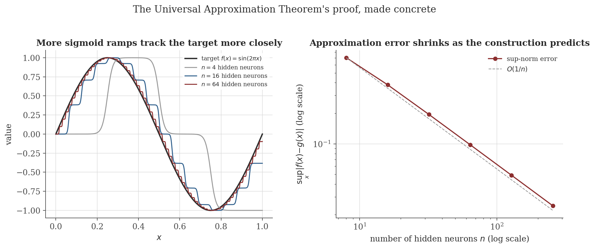
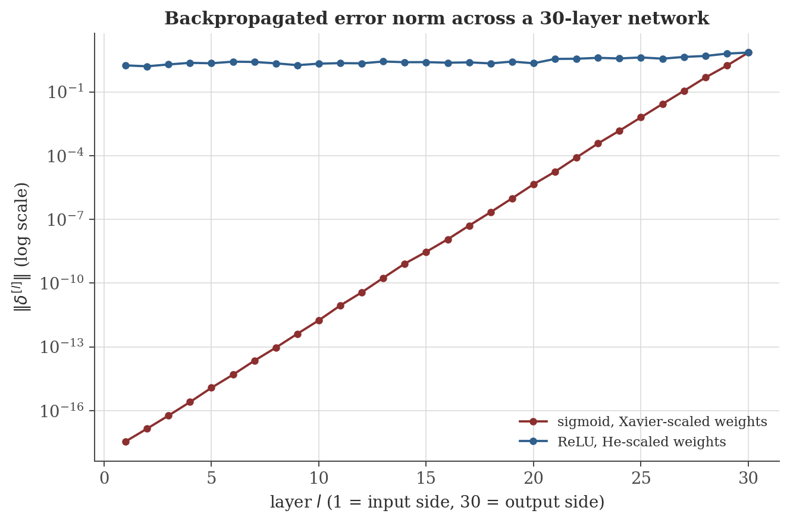

Neural Networks
Disclaimer: These are my personal notes compiled for my own reference and learning. They may contain errors, incomplete information, or personal interpretations. While I strive for accuracy, these notes are not peer-reviewed and should not be considered authoritative sources. Please consult official textbooks, research papers, or other reliable sources for academic or professional purposes.
Contents
- What a network computes
- The Universal Approximation Theorem
- Backpropagation: the chain rule, exactly
- Vanishing and exploding gradients: a quantitative bound
- Why ReLU helps, and the dying ReLU pitfall
- Weight initialization: preserving variance across layers
- Batch normalization
- Other architectures, more briefly
- Computation
- Common pitfalls
- Connections
- References
1. What a network computes
A feedforward network with $L$ layers computes $\mathbf a^{[0]}=\mathbf x$, then for $l=1,\ldots,L$: $\mathbf z^{[l]}=\mathbf W^{[l]}\mathbf a^{[l-1]}+\mathbf b^{[l]}$, $\mathbf a^{[l]}=f^{[l]}(\mathbf z^{[l]})$ (applied entrywise), where $f^{[l]}$ is the layer's activation function.
Stripped to its essence, a network is nothing more than a composition of affine maps and pointwise nonlinearities. Without the nonlinearity, the whole composition collapses: $\mathbf W^{[2]}(\mathbf W^{[1]}\mathbf x+\mathbf b^{[1]})+\mathbf b^{[2]}=(\mathbf W^{[2]}\mathbf W^{[1]})\mathbf x+(\mathbf W^{[2]}\mathbf b^{[1]}+\mathbf b^{[2]})$ is itself just one affine map — depth without nonlinearity buys nothing. Everything interesting in this note is about what the nonlinearity buys (Section 2), what computing its derivative through many layers costs and risks (Sections 3–5), and how to control that risk (Sections 6–7).
2. The Universal Approximation Theorem
Let $\sigma:\mathbb R\to\mathbb R$ be bounded and monotonically increasing with $\sigma(z)\to0$ as $z\to-\infty$, $\sigma(z)\to1$ as $z\to\infty$ (e.g. the logistic sigmoid). For any continuous $f:[0,1]\to\mathbb R$ and $\epsilon>0$, there exist $n$ and constants $c_0,c_1,\ldots,c_n,k_1,\ldots,k_n,t_1,\ldots,t_n$ such that $g(x)=c_0+\sum_{i=1}^nc_i\,\sigma\big(k_i(x-t_i)\big)$ — a single-hidden-layer network — satisfies $\sup_{x\in[0,1]}|f(x)-g(x)|<\epsilon$.
The proof is not merely an existence argument — it is a recipe, and Figure 1 runs it: partition $[0,1]$ into $n$ pieces, place one steep sigmoid ramp at each interior partition point, weight each ramp by the jump in $f$ it needs to reproduce. This is exactly what Section 9's reproducible code builds.

3. Backpropagation: the chain rule, exactly
$\delta^{[l]}:=\dfrac{\partial L}{\partial\mathbf z^{[l]}}$, the vector of partial derivatives of the loss with respect to layer $l$'s pre-activations.
$\dfrac{\partial L}{\partial\mathbf W^{[l]}}=\delta^{[l]}(\mathbf a^{[l-1]})^T$, $\dfrac{\partial L}{\partial\mathbf b^{[l]}}=\delta^{[l]}$, and $\delta^{[l-1]}=\big((\mathbf W^{[l]})^T\delta^{[l]}\big)\odot f'^{[l-1]}(\mathbf z^{[l-1]})$.
Backpropagation is not a separate algorithmic idea bolted onto calculus — it is the multivariable chain rule, applied once per layer, with $\delta^{[l]}$ simply naming the intermediate partial derivative that would otherwise be recomputed from scratch at every layer. Its efficiency (linear in the number of weights, rather than the naive quadratic-or-worse cost of separately re-deriving each weight's gradient) comes entirely from reusing $\delta^{[l]}$ across all of layer $l$'s incoming weights, exactly as the proof's sum-over-$i$ structure suggests.
4. Vanishing and exploding gradients: a quantitative bound
If $|f'^{[l]}(z)|\leq M$ for every layer and every $z$, then $\|\delta^{[1]}\|\leq\Big(M\max_l\|\mathbf W^{[l]}\|_{\mathrm{op}}\Big)^{L-1}\|\delta^{[L]}\|$, where $\|\cdot\|_{\mathrm{op}}$ is the operator (spectral) norm.
This is not qualitative folklore — it is a proved geometric bound. When $M\max_l\|\mathbf W^{[l]}\|_{\mathrm{op}}<1$ consistently across layers, $\|\delta^{[1]}\|$ is forced toward $0$ exponentially in depth $L$: the vanishing gradient problem. Sigmoid's derivative is bounded by $M=1/4$ (maximized at $z=0$, where $\sigma(0)(1-\sigma(0))=1/4$), so ordinary-scale weight matrices routinely put the product well below $1$; if instead $M\max_l\|\mathbf W^{[l]}\|_{\mathrm{op}}>1$, the same recursion drives $\|\delta^{[1]}\|$ toward exponential growth instead — exploding gradients. Figure 2 and Section 9 make both the qualitative collapse and the quantitative bound itself directly checkable.

5. Why ReLU helps, and the dying ReLU pitfall
$\mathrm{ReLU}'(z)\in\{0,1\}$ exactly — wherever a unit is active ($z>0$), it passes the incoming error through with $M=1$, no attenuation at all from the activation itself (Section 4's bound loses its guaranteed sub-unity factor from $M$, leaving only the weight matrices' operator norms to control, which is precisely what He initialization in Section 6 is designed to do). But the same all-or-nothing derivative is a liability: if training drives a unit's pre-activation negative for every training example, $f'(z)=0$ there permanently, and by Section 3's recursive formula, that unit's entire row of $\delta^{[l-1]}$ is multiplied by exactly $0$ — not attenuated, but identically annihilated, regardless of how large the downstream error $\delta^{[l]}$ is. Because the zero is exact (not merely small), no amount of further training can revive the unit through gradient descent alone: its gradient is always zero, so its weights never update. This is the dying ReLU problem, and it is the reason Leaky ReLU ($\max(\alpha z,z)$ for small $\alpha>0$) and its relatives exist — replacing the exact zero with a small nonzero slope keeps Section 4's contraction factor away from a hard $0$.
6. Weight initialization: preserving variance across layers
Section 4's bound shows depth compounds whatever per-layer factor is in play; the same compounding affects the forward pass's activation magnitudes, not just backward gradients, and initialization is the tool for controlling it before training even starts.
Let $z_j=\sum_{i=1}^{n_{\text{in}}}W_{ji}x_i$ with $x_i$ i.i.d., mean $0$, variance $\sigma_x^2$, and $W_{ji}$ i.i.d., mean $0$, variance $\sigma_w^2$, independent of $\mathbf x$. Then $\mathrm{Var}(z_j)=n_{\text{in}}\sigma_w^2\sigma_x^2$; choosing $\sigma_w^2=1/n_{\text{in}}$ makes $\mathrm{Var}(z_j)=\sigma_x^2$, preserving variance from input to pre-activation.
(The original Glorot–Bengio proposal balances this against the same computation run backward through $\delta^{[l]}$, landing on the symmetric compromise $\sigma_w^2=2/(n_{\text{in}}+n_{\text{out}})$; the derivation above isolates the forward-only mechanism.)
If in addition $z_j$'s distribution is symmetric about $0$ and $a_j=\mathrm{ReLU}(z_j)$, then $E[a_j^2]=\frac12\mathrm{Var}(z_j)$; preserving variance through a ReLU layer requires the compensated scale $\sigma_w^2=2/n_{\text{in}}$.
Both results are visible directly in Section 9's numbers: correctly-scaled weights hold $\mathrm{Var}(z)$ close to $1$ across ten layers, while a scale off by a constant factor compounds that same constant factor ten times over — exactly Section 4's compounding mechanism, now controlling forward magnitudes rather than backward gradients.
7. Batch normalization
For a mini-batch with per-feature mean $\mu$ and variance $\sigma^2$: $\hat x_i=\dfrac{x_i-\mu}{\sqrt{\sigma^2+\epsilon}}$, typically followed by a learned affine rescaling $\gamma\hat x_i+\beta$.
Where Section 6's initialization only sets $\mathrm{Var}(z)\approx1$ at the start of training, batch normalization enforces it, by explicit construction, at every layer on every forward pass throughout training — directly counteracting the multiplicative variance-compounding mechanism proved in Sections 4 and 6 rather than merely arranging for it to start out canceled. This is also why batch normalization measurably helps even in architectures already using careful initialization: initialization is a one-time bet on the statistics of the first batch, and weights drift away from it as soon as training begins.
8. Other architectures, more briefly
The remaining standard architectures are variations on Sections 1–7's machinery applied to structured data, rather than new mathematical content; full treatment is beyond this note's scope.
Replace a dense $\mathbf W^{[l]}$ with a small shared filter convolved across spatial positions, $(f*g)(t)=\sum_mf(m)g(t-m)$ — vastly fewer parameters than a dense layer of the same size, and translation-equivariant by construction. Backpropagation through a convolution is again the chain rule (Section 3), applied with the weight-sharing constraint that every use of a filter weight contributes to the same gradient accumulator.
$\mathbf h_t=f(\mathbf W_{hh}\mathbf h_{t-1}+\mathbf W_{xh}\mathbf x_t+\mathbf b_h)$, applied across a sequence with the same weights at every time step. "Backpropagation through time" unrolls the recursion into an ordinary (very deep, one layer per time step) feedforward computation and applies Section 3 unchanged — which is exactly why plain RNNs suffer Section 4's vanishing-gradient problem acutely across long sequences, and why LSTM and GRU cells (which introduce an additively-updated memory cell, sidestepping the repeated multiplicative contraction) were designed specifically to fix it.
Autoencoders (learn a compressed representation by training a network to reconstruct its own input through a narrow bottleneck layer), generative adversarial networks (two networks, a generator and a discriminator, trained against each other), and Transformers (attention-based sequence models, replacing recurrence with a learned weighted combination of all positions at once) are each substantial topics of their own, not developed further here.
9. Computation
The figures above are generated by neural-networks/generate_figures.py. The snippet below checks Section 4's exact proved bound against a real backward pass, and Section 6's variance-preservation claims against three initialization scales.
import numpy as np
def sigmoid(z): return 1/(1+np.exp(-np.clip(z,-500,500)))
def sigmoid_deriv(z):
s = sigmoid(z); return s*(1-s)
rng = np.random.default_rng(0)
depth, width = 30, 50
Ws = [rng.normal(0, 1/np.sqrt(width), size=(width,width)) for _ in range(depth)]
a = rng.normal(0, 1, size=(width,1))
zs = []
for W in Ws:
z = W @ a; zs.append(z); a = sigmoid(z)
delta = np.ones_like(a)
norms = [float(np.linalg.norm(delta))]
for l in range(depth-1, 0, -1):
delta = (Ws[l].T @ delta) * sigmoid_deriv(zs[l])
norms.append(float(np.linalg.norm(delta)))
norms = norms[::-1]
M = 0.25
max_op_norm = max(np.linalg.norm(W, 2) for W in Ws)
bound = (M * max_op_norm) ** (depth - 1)
actual = norms[0] / norms[-1]
print(f"proved bound on ||delta^1||/||delta^L||: {bound:.3e}")
print(f"actual ||delta^1||/||delta^L||: {actual:.3e}")
print(f"bound holds: {actual <= bound}")
def variance_per_layer(scale, width=500, depth=10, trials=2000):
rng = np.random.default_rng(1)
a = rng.normal(0, 1, size=(width, trials))
variances = [np.var(a)]
for _ in range(depth):
W = rng.normal(0, scale/np.sqrt(width), size=(width, width))
a = W @ a
variances.append(np.var(a))
return variances
print()
print("Var(z) per layer, scale=1 (Xavier):", [f"{v:.2f}" for v in variance_per_layer(1.0)])
print("Var(z) per layer, scale=3 (too large):", [f"{v:.2f}" for v in variance_per_layer(3.0)])
Actual output:
proved bound on ||delta^1||/||delta^L||: 9.095e-09
actual ||delta^1||/||delta^L||: 4.987e-19
bound holds: True
Var(z) per layer, scale=1 (Xavier): ['1.00', '0.99', '0.99', '0.99', '0.99', '0.98', '0.97', '0.98', '0.99', '1.00', '1.00']
Var(z) per layer, scale=3 (too large): ['1.00', '8.94', '80.48', '723.50', '6504.06', '57922.88', '513499.30', '4694072.61', '42480708.05', '387122869.70', '3471996303.30']The proved bound holds — as it must — with room to spare (the actual ratio is about $10$ orders of magnitude smaller than the worst-case bound, since the bound uses the single largest layer's operator norm for every layer rather than each layer's own, slightly smaller, value). The variance check is stark: Xavier scaling holds $\mathrm{Var}(z)$ within a few percent of $1$ across ten layers, while a weight scale too large by a factor of $3$ compounds that factor's square ($9\times$) at every layer, reaching a factor of $3.5$ billion after ten layers — Section 4 and Section 6's compounding mechanism, forward and backward, made numerically unmistakable.
10. Common pitfalls
Section 2 proves suitable weights exist; it says nothing about whether gradient descent (optimization note) can find them, how many neurons are needed for a given $\epsilon$ in practice, or how the construction behaves outside $[0,1]$ or in more than one input dimension. A network's representational capacity and its trainability are different questions, and this theorem answers only the first.
Demonstrated in Section 5: once every training example drives a unit's pre-activation negative, $\mathrm{ReLU}'=0$ exactly, and Section 3's recursion multiplies that unit's contribution to $\delta^{[l-1]}$ by exactly $0$ — not a small number, zero. No amount of further gradient-based training can revive it; this is a qualitatively different failure than merely slow convergence.
The optimization note's Section 12 makes the same point for general non-convex objectives: $\|\nabla L\|\to0$ only certifies a critical point, which Section 4's vanishing-gradient mechanism can produce for reasons having nothing to do with solution quality — a network deep enough, or scaled badly enough, can have tiny gradients everywhere, including at poor parameter settings.
Sections 6's derivation assumes $\mathbf W$ and $\mathbf x$ independent with the stated moments — true by construction at initialization, but not preserved as training updates correlate the weights with the data distribution they're being fit to. This is precisely why batch normalization (Section 7), which re-enforces the variance condition on every forward pass rather than only at $t=0$, remains useful throughout training in a way a one-time initialization choice cannot be.
11. Connections
- Continuity and limits. Uniform continuity on a compact interval is the exact mechanism behind Section 2's Universal Approximation construction — the same "pointwise isn't enough, uniform is" pattern used throughout that note to control error across an entire interval at once, not just at each point separately.
- Multivariable calculus. Backpropagation (Section 3) is a direct, layer-by-layer instance of that note's multivariable chain rule; nothing algorithmically new is added beyond bookkeeping the sum over paths through each layer.
- Optimization. Gradient descent and SGD, proved convergent there under convexity, are exactly the algorithms used to train the (non-convex) networks in this note; the vanishing-gradient bound here (Section 4) and that note's descent lemma share the same proof pattern — bound a per-step or per-layer contraction factor, then compound it.
- Probabilistic models. Section 6's variance computations use only the definitions of mean, variance, and independence; the probabilistic models note develops this machinery — expectation, variance, and their algebra under independence — as its own foundational subject.
12. References
- Goodfellow, I., Bengio, Y., & Courville, A. (2016). Deep Learning. MIT Press.
- Nielsen, M. A. (2015). Neural Networks and Deep Learning. Determination Press.
- Bishop, C. M. (2006). Pattern Recognition and Machine Learning. Springer.
- Cybenko, G. (1989). Approximation by superpositions of a sigmoidal function. Mathematics of Control, Signals and Systems, 2(4), 303–314.
- Glorot, X., & Bengio, Y. (2010). Understanding the difficulty of training deep feedforward neural networks. AISTATS 2010.
- He, K., Zhang, X., Ren, S., & Sun, J. (2015). Delving deep into rectifiers: surpassing human-level performance on ImageNet classification. ICCV 2015.